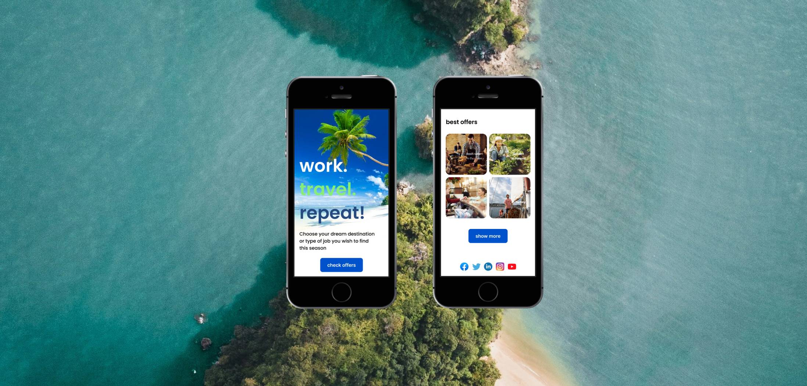
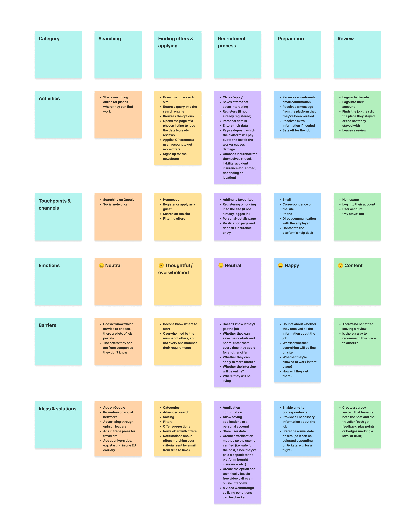
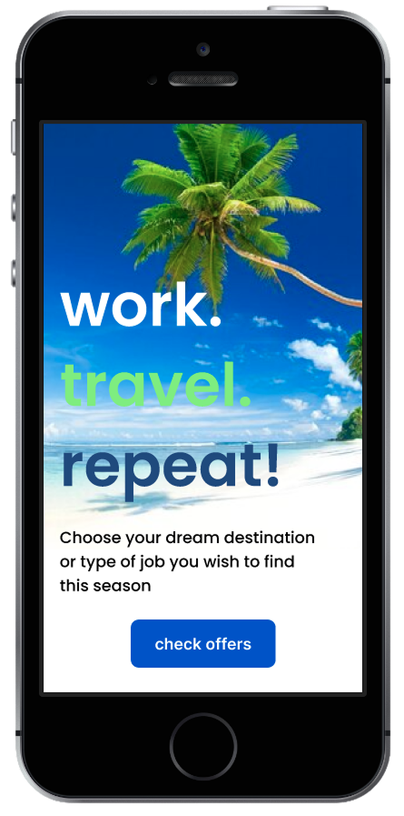
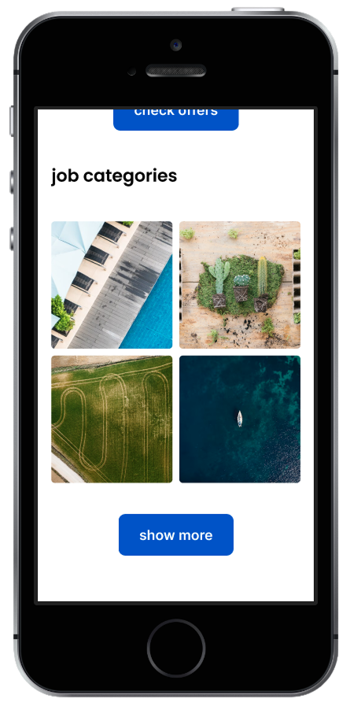
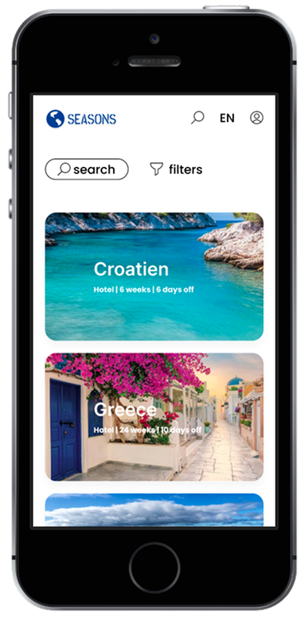
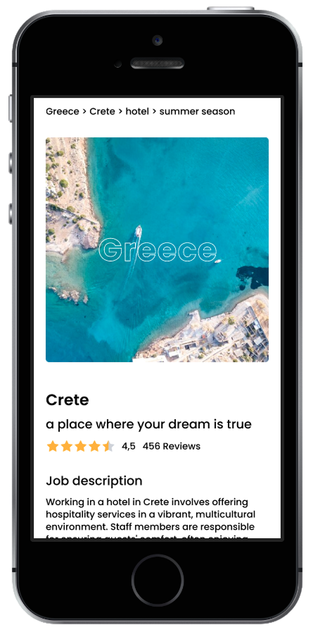

· UX Case Study — Webservice für Traveller und Host ·
2024
Kleinere, familiengeführte Pensionen und Hotels haben oft Schwierigkeiten, in der Hauptsaison genügend Personal zu finden. Wird kurzfristig eine Mitarbeiterin oder ein Mitarbeiter krank, sind sie meist nicht in der Lage, spontan Ersatz einzustellen.
Auf der anderen Seite ist „Work and Travel" ein bekanntes Konzept: Viele Reisende, die ihren festen Job aufgegeben haben, um die Welt zu bereisen, suchen sich unterwegs spontan Mini-Jobs. Kost und Unterkunft entlasten sie dabei von den Reisekosten, die sich bei einer dauerhaften Reise schnell summieren.
Traveller und Host verbinden.
Hosts dabei unterstützen, den Personalbedarf für ihr Hotel & Co. zu planen
Travellern helfen, ihre Reise kostengünstig zu gestalten
Vertrauen und Sicherheit für Host und Traveller gleichermaßen
Die größte Konkurrenz sind klassische „Work and Travel"-Vermittlungsagenturen. Daneben nutzen viele Traveller auch soziale Medien und Community-Plattformen, um Kontakte und Unterkünfte zu finden.
Beide Wege haben ihre Schwächen: Agenturen bieten zwar Sicherheit — geprüfte Stellen, klare Konditionen —, sind dafür aber oft teuer und unpersönlich. Soziale Medien und Community-Plattformen wirken persönlicher und günstiger, bieten dabei aber kaum Schutz: Man weiß nie genau, wen man vor sich hat.
Um die Job-Suche der Traveller greifbar zu machen, habe ich eine User Journey Map erstellt — von der ersten Suche über Bewerbung und Recruiting-Prozess bis zur Vorbereitung und dem Feedback danach. Für jede Etappe habe ich Handlungen, Touchpoints, Emotionen, Hürden und mögliche Lösungsansätze festgehalten.

Ich habe zwei Nutzertypen identifiziert und ihre Pain Points herausgearbeitet. Daraus habe ich jeweils eine Persona für Hosts und für Traveller entwickelt.
Klara hat fast erwachsene Kinder, die in der Hochsaison im Hotel mithelfen. Wenn sie eine freie Minute hat, liest sie gerne Reisebücher. Sie versucht, sich im Bereich Marketing für ihr Familienhotel weiterzuentwickeln. Für einen längeren Urlaub hat sie nur im Winter Zeit.
Sie möchte das Familienunternehmen weiterentwickeln, einen Ort mit Seele und Mission schaffen und interessante Menschen kennenlernen. Außerdem würde sie gerne selbst mehr reisen.
Sie schaltet oft lokale Stellenanzeigen. Sie braucht die Garantie, dass jemand die ganze Saison durcharbeitet, hat aber nicht das ganze Jahr über gleich viel Arbeit — deshalb sucht sie flexible Arbeitskräfte. Sie sucht interessante Menschen und möchte Teil einer größeren Community sein.
Nutzt die Plattform am Computer, im Rahmen ihrer administrativen Hotelarbeit.
Ian ist Student und lebt in Hamburg, wo die Lebenshaltungskosten hoch sind. Er arbeitet neben dem Studium, um sich zu finanzieren und Erfahrung für seinen zukünftigen Beruf zu sammeln. Trotzdem will er nicht auf Urlaub und große Abenteuer verzichten. Er interessiert sich für das Weltgeschehen, Umweltschutz ist ihm wichtig. Er trainiert Radsport und Kitesurfen.
Er möchte in den Urlaub fahren können, ohne sein Budget zu strapazieren. Er will Locals kennenlernen und Teil ihrer Community werden. Er möchte die Welt und ihre Menschen entdecken.
Er durchsucht verschiedene Job-Portale und Angebote von Work-and-Travel-Agenturen — er kennt viele davon aus Uni-Werbung. Er hat Erfahrung mit Couchsurfing, mag aber das Gefühl nicht, „jemandem auf der Tasche zu liegen".
Nutzt die Plattform am Handy, ist ständig online.
Aus den Pain Points beider Seiten wird deutlich: Es braucht mehr als reine Vermittlung — es braucht Vertrauen.
Die Community ist mehr als ein Ort zum Kennenlernen — sie ist Teil des Sicherheitskonzepts der Plattform. Hosts und Traveller können sich gegenseitig bewerten und Empfehlungen hinterlassen. Zusätzlich können beide Seiten Hinweise zu bestimmten Orten oder Herausforderungen teilen — ähnlich einem klassischen Forum. So entsteht mit der Zeit ein wachsendes, gemeinsames Erfahrungswissen, von dem alle profitieren.
Der Flow von Ian, unserem Traveller.




Ich habe mich für ein Abo-Modell entschieden, monatlich oder jährlich zahlbar. Der Beitrag deckt die Kosten für eine Versicherung bei einem externen Versicherungspartner ab — konkret eine Haftpflicht- und Auslandsreiseversicherung. Nutzer:innen können wählen, ob die Absicherung weltweit gelten soll oder nur für eine ausgewählte Region.
Damit übernimmt die App zentrale Sicherheitsfragen für beide Seiten: Verursacht ein Traveller beispielsweise einen Schaden, greift die Haftpflichtversicherung des Drittanbieters. Auch die Identität wird über diesen Partner geprüft — etwa über ein Führungszeugnis.
Hosts und Traveller zahlen unterschiedliche Beiträge. Da Hosts über die App zusätzlich die Möglichkeit haben, für ihr Angebot zu werben, sind ihre Abo-Stufen anders gestaltet als die der Traveller — dort richten sich die Kosten eher nach der gewählten Region.
Angebots-Erfüllungsquote — Ziel: 70 % der veröffentlichten Host-Angebote werden erfolgreich mit einem Traveller besetzt.
Ursprünglich war die Persona auf kleine, familiengeführte Hotelbetriebe ausgelegt. Das Grundkonzept lässt sich jedoch auf weitere Branchen übertragen — von Stellen auf Yachten bis zu saisonaler Arbeit in der Landwirtschaft, etwa bei der Obst- und Gemüseernte. Je nach Bedarf der Anbieter und Vorlieben der Traveller ergeben sich so vielfältige Einsatzmöglichkeiten.